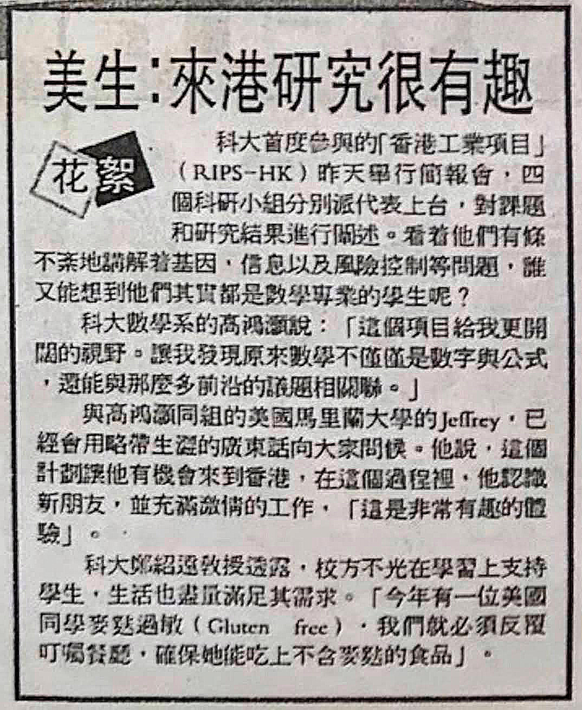
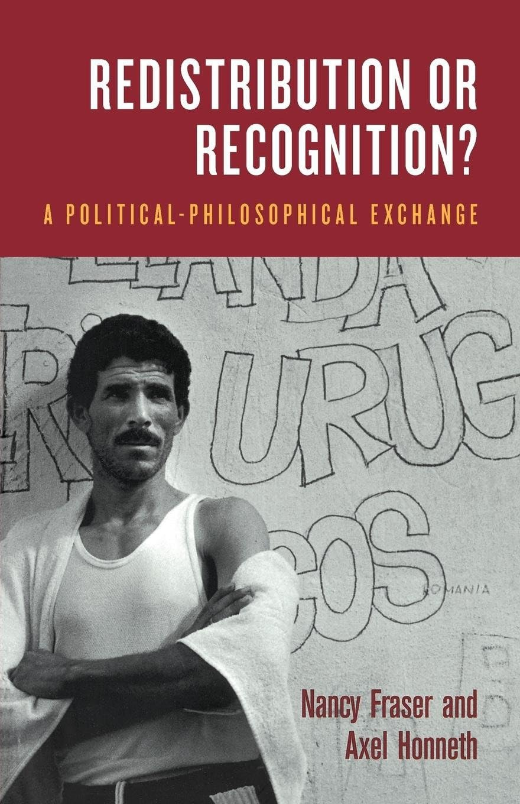
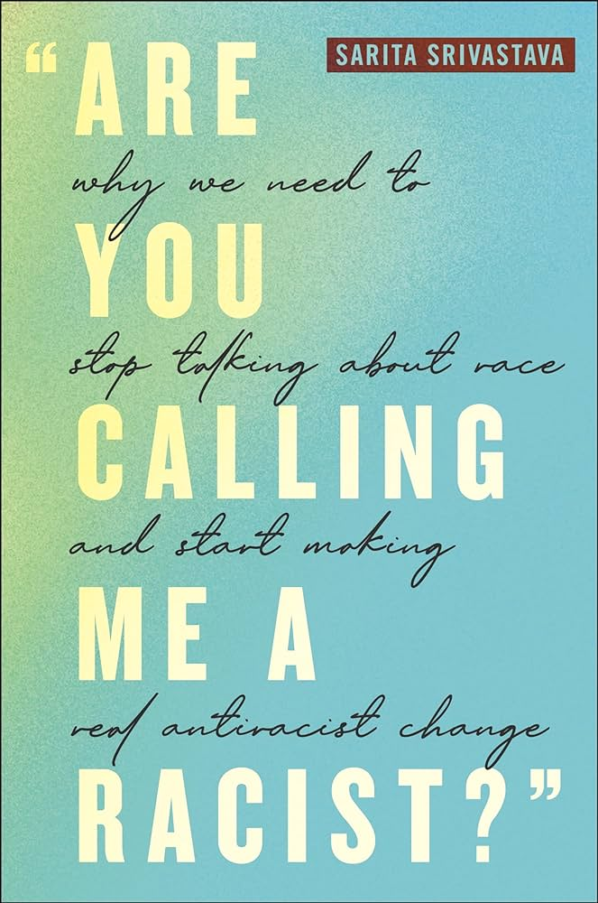
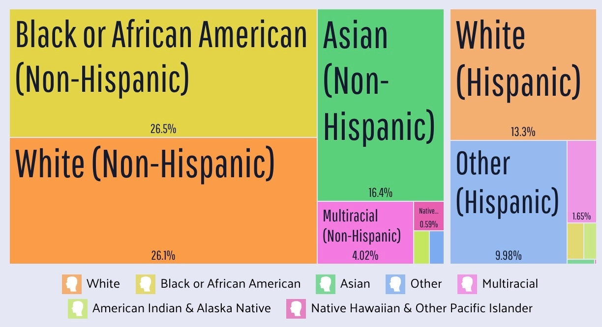
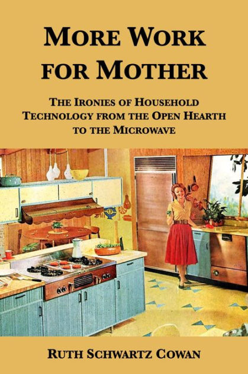
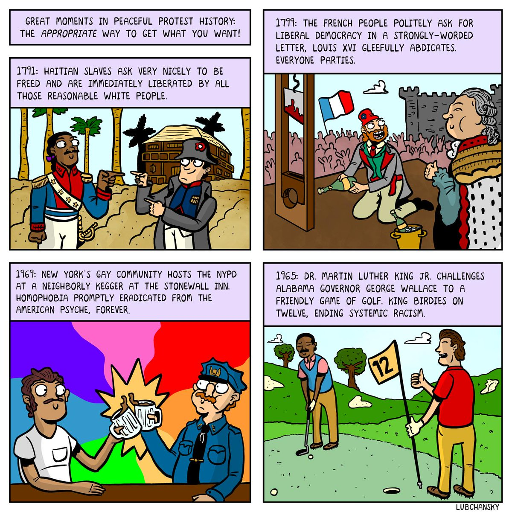

Week 13: Standpoint Epistemology, Data Feminism
DSAN 5450: Data Ethics and Policy
Spring 2024, Georgetown University
The Ordering of Topics is Important Here!
- Last week: Unfortunate-ness of white male teaching about race
- This week: Unfortunate-ness of white male teaching about gender
- But, also this week, a counterpoint: “Diversity in tech” \(\overset{?}{\longleftrightarrow}\) The burden of “speaking for” one’s identity group
Jeff’s Laying-Out-Biases Corner
- (aka 60-second soapbox)
- I… spent most of my teens/20s in meetings, rallies, etc., yelling at capitalism, imperialism, and the like
- Ex: Cringe-era Jeff did an interview with an HK newspaper, where I distinctly remember a whole spiel about:
I felt it was important to live and work specifically in Beijing, Shenzhen, and Hong Kong, because in the US we’re taught that anything besides American Capitalism is monolithically evil, so I’m hoping to see for myself how both capitalism and its alternatives are experienced by people in all three
- Which they dutifully reported in a very fair paraphrase:

The Reason I Mention That!
- Acknowledging exclusion vs. thinking through of why ppl are excluded and fixing it
- Favorite non-controversial example: land acknowledgement at pro-Israel summer camps

The Standpoint Problem Revisited
- Problem statement: Jeff can’t possibly “teach” data-ethical issues, w.r.t. how they affect women, in the same manner he can teach e.g. how to take a derivative
- Solution 1: Have a woman teach a guest lecture \(\rightarrow\) (Possibility) Problem solved; (Possibility) Forcing additional labor onto women (see: 3 slides from now)
- Solution 2: Utilize the immense labor women have already put into trying to explain these issues to men with power, and amplify these already-existing products of this already-expended labor
Specifically-Chosen Examples


With Great Privilege Comes Great Responsibility
What is the most damage I can do, given my biography, abilities, and commitments, to the racial order and rule of capital? (Joel Olson)
(You’re Really Not Gonna Like This One, So I’ll Just Show It Real Quick And Move On)
Dolezal no doubt has her issues and idiosyncrasies, but, especially if the judgment of the NAACP counts for anything in the matter, I’d take her in a trade for Clarence Thomas, Cory Booker, and Condi Rice.
Or would Dolezal’s “not even close to being black” mean that she was raised outside of “authentic” black idiom or cultural experience? But whose black idiom or cultural experience would that be? Is there really an irreducible, definitive one? If so, on which Racial Voice blog or Ivy League campus might we find it?
In Blay’s narrow political universe, the NAACP branch presidency is an honorific to be awarded on the basis of ascriptive categories like race and gender, not the result of effective work on behalf of the Association’s mission and goals.
(Adolph Reed, “From Jenner to Dolezal: One Trans Good, the Other Not So Much”)
The “Diversity in Tech”-Industrial Complex
- Problem: Not enough diversity in tech
- Solution 1: Intervene on the causal pathways leading to this outcome (incl. studying/tracing causal pathways)
- Costs borne by tech companies; benefits accrue to marginalized ppl ‚ùåüôÖ‚Äç‚ôÇÔ∏è‚èπÔ∏è
- Solution 2: Make marginalized ppl in tech jobs do tech jobs plus also extra job of explaining their marginalization to non-marginalized ppl (Third Shift?), who go home feeling good that they went to the diversity in tech panel (Brecht)
- Costs borne by marginalized ppl; benefits accrue to tech companies ‚úÖüé∞ü§ë
(See Also)
“Diversity” vs. Fairness / Justice
- (Only single-quoted, bc not as bad as “““terrorism”“” or “““smartness”““, but still p ill-defined!)


Diversity vs. Fairness / Justice


Data Feminism
Epistemological One-Way Mirror 2: Electric Boogaloo
Representation of the world, like the world itself, is the work of men; they describe it from their own point of view, which they confuse with the absolute truth.
“It Goes Without Saying”
Whiteness and maleness are implicit. They are unquestioned. They are the default. And this reality is inescapable for anyone whose identity does not go without saying […] For anyone who is used to jarring up against a world that has not been designed around them and their needs.
Belief in the objectivity, the rationality, the, as Catherine Mackinnon has it, “point-of-viewlessness” of the white, male perspective. Because this perspective is not articulated as white and male (because it doesn’t need to be), because it is the norm, it is presumed not to be subjective.
People = Male, Animal = Male
- “When I say ‘he’ I really mean ‘he or she’, obviously”
- Except… irrespective of what you really mean, or whether it’s ‘obvious’, it goes out into the world and has effects (reification),
- From childhood (Vervecken, Hannover, and Wolter 2013)
- To job-hunting (Bem and Bem 1973)
- And beyond (Sczesny, Formanowicz, and Moser 2016)
- A stuffed animal must be “super-feminine” before “even close to half of participants will refer to it as she rather than he”. (Lambdin et al. 2003)
The Cowan “Paradox”
For many ages to come the old Adam will be so strong in us that everybody will need to do some work if he [sic] is to be contented […] But beyond this, we shall endeavour to spread the bread thin on the butter—to make what work there is still to be done to be as widely shared as possible. Three-hour shifts or a fifteen-hour week may put off the problem for a great while. For three hours a day is quite enough to satisfy the old Adam in most of us!
(John Maynard Keynes, “Economic Possibilities for our Grandchildren”, 1930)

Solving All the Problems
Solutions via Causal Historical Analysis
- The data: historical cases of attempts to end oppression
- Dependent variable: Did they succeed or were they successfully repressed?
- (You’re not gonna like this one either…)
Instances of Oppression and their Termination
- Slavery?
- Colonialism?
- Apartheid in South Africa / Rhodesia?
- The Ethnic Cleansing of Palestine?
- Thankfully, all of these were ended peacefully, and in ways that were agreeable to everyone involved, especially those who benefitted from them!!! ü•≥üï∫
Great Moments in Peaceful Protest History
